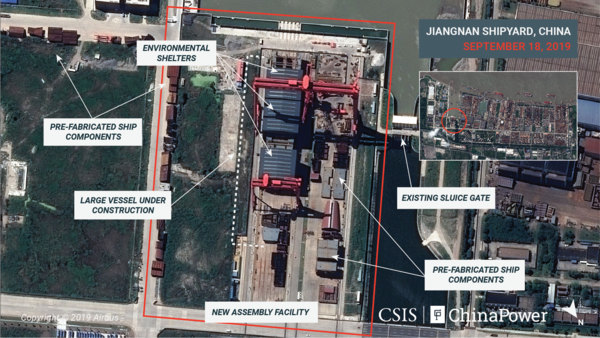

【海軍】有關航母的一些新消息
2019-10-18 09:01:00
原文网址：https://blog.udn.com/MengyuanWang/130149479
我停寫《共軍小道消息》系列有兩年了，目前看來也沒有重啓的必要。原因很多，我以前解釋過一些：一方面我想要專注在更重要的國際、政略、經濟和其他議題；另一方面軍迷們普遍不遵守理性討論的基本行爲規範，所以發表那一類的文章並不是很愉快的經驗；但是最重要的是，該系列的主旨，也就是共軍的軍工發展基本達到與美國沒有代差的水準，現在已經被華語界的知識份子廣汎接受，所以也就無需像我這樣沒有直接消息管道的人來幫忙傳播。
這次十一國慶閲兵之後，我注意到歐美的軍事媒體界也忽然覺悟，對共軍的軍工技術能力有了全新的尊敬與重視。其實考慮到我在前文《從美國看閲兵》所强調的DF-17、WZ-8和HSU001都沒有美俄已公開的對應型號在役，這個態度的轉變是很自然合理的。這裏是出現在主流媒體的一個很典型報導：《中國的隱身無人機和超高音速導彈超越並且威脅美國》，參見https://www.nbcnews.com/think/opinion/china-s-stealth-drones-hypersonic-missiles-surpass-threaten-u-s-ncna1064841。

上圖是《ChinaPower》今天發表的新衛星圖，比較了江南造船厰一個新港池在過去這年的施工進展。該文（參見https://chinapower.csis.org/china-carrier-type-002/）作者認爲這是為未來幾年加速建造航母所做的準備。當然，實際上我們還不能確定未來中國航母的建造步驟和地點，只能根據既有的公開資訊來討論018號（在上圖右下角，鐵灰色屋棚下；目前已有一長一短兩座龍門吊）本身的進展。

這裏是018號的放大圖，經由測量地面上的幾個總段，可以估計出水綫橫寬約爲39米（016和017號皆爲35米），那麽滿載噸位應該幾乎達到80000噸，接近以往美軍的小鷹號。《ChinaPower》認爲（我對造船一竅不通，無法為這個意見做過濾、背書或修正）組裝還需要12個月，所以是明年後半下水，2022年服役。

與此同時，美軍新一代的航母Ford級首艦CVN 78號（見上圖）正準備完成整修，在本月底出塢。
CVN 78早在2009年就開工（比018號早8年），2013年下水（比018號早7年），但是拖到2017年才正式服役（可能比018號早5年）；然而這依舊是趕鴨子上架，CVN 78至今始終沒有任何作戰能力。這是因爲Ford級其實是Nimitz級的大改型，主要是更新了核反應動力系統和電力供應系統，以便能改用電磁彈射以及電磁升降機，而後面這兩個全新的系統麻煩很大，並不可靠。其中電磁彈射還只是壽命遠短於預期，可以暫時凑合著用，但是11套電磁彈藥升降機卻不斷當機。既然沒法為戰機補充彈藥，自然不可能實戰部署，所以服役不到一年就回到Hungtington Ingalls在維吉尼亞州的船塢進行大修。

上圖是Ford號的兩套上面級電磁彈藥升降機之一。所謂電磁升降機，就是把馬達的環形結構展開成爲綫型，用電磁力直接控制升降，取代了目前電梯常用的鋼索。這個結構和磁浮列車類似，只不過從水平改爲垂直，而且無須把車廂推升離開地面。這在理論上並無特別的難處，再加上力道强勁、加速度快、安全性高，所以在紙面計劃階段是很自然的選擇。
然而電磁升降機在實際工程上並沒有前例，即使是民用型（尺寸和負重都遠小於軍用型，參見https://www.youtube.com/watch?v=8OBHUZetYIU）也才剛在2017年由德國的ThyssenKrupp做出原型，目前還在實驗專用大樓（真的是一座專爲測試新型升降機所建的高塔，位於德國的Rottweil）做研發測試。美國的工業實力在快速消退之中，一下子要搞定這種中等難度的全新工程都無法做到了。
美國海軍並沒有公開問題的細節，所以這裏我根據一些隻言片語來做臆測：這些升降機的毛病可能出在它們的載重要求很大，所以不像ThyssenKrupp的民用型號只在一面裝了綫性電磁馬達，而必須在兩個對面有動力支撐。然而Ford號艦體設計的結構强度似乎沒有預期到這點，對這種尺寸精度要求極高的系統，無法保持固定的寬度和角度。那麽這是一種娘胎裏帶出來的毛病，很難想象能有什麽簡單修改的補丁，結果Hungtington Ingalls搞了15個月，最新的消息是只有上面級的兩套修好了，貫穿全深的另外九套仍然是無可救藥。
很不幸的是，去年十二月，Trump聽到了一些風聞，發了一條Twitter來罵海軍，於是逼得海軍部長Richard Spencer急急趕到白宮，拿自己的人頭（職位）保證在今年底之前修好。我其實很佩服這樣的勇氣和魄力，他應該是一位有擔當的主管，可惜他手底下的官僚體系顯然已經腐爛到一個程度了（參見前文《藝術和科學的衰敗》），連這種高可見度的大事都還敢繼續欺瞞上司，騙他說可以很快解決。
Ford號顯然無法很快獲得作戰能力，甚至有可能到2022年018號都服役出海巡弋了，它還在趴窩。但是我覺得與其幸災樂禍，中方正確的反應是反思自身體系裏的官僚惰性，是否也有類似美國的腐敗、推諉、無能的現象。畢竟美國也曾經是一個朝氣蓬勃的新興工業國：例如在1886年南方的鐵路必須更改軌距，以利與北方互通，他們在36小時之内就完成了18000公里的工作（詳情參見http://southern.railfan.net/ties/1966/66-8/gauge.html）。現在我看到中國媒體和網民，對像是用9個小時改一個火車站的小工程，就拼命往自己臉上貼金，自稱舉世無雙，覺得他們既無知又危險。美國在20世紀前半，完全改正了自身的政治經濟體系，從絕對自由主義的放任性富豪獨占社會，轉化建設出一個極爲高效、平等而且凝聚力極强的國家機器，這個工程比起前面所提的更改軌距，又難上、大上好幾個數量級。中國也面對著類似難度的挑戰，未來是否成功還未可知。
【後註一】2019年十月23日，消息（參見https://www.forbes.com/sites/craighooper/2019/10/23/the-navy-obfuscates-on-shock-testing-the-13-billion-dollar-uss-ford）傳出，美國海軍負責研發的助理部長James Geurts在衆議院接受針對Ford號的質詢期間，透露：“We are re-looking at that full schedule in lieu of shock trials...”（“我們正在考慮跳過震撼實驗的時間表...”）
所謂的“震撼實驗”，就是新型船體在進入正式服役之前，在近距離的水下，引爆水雷，以模擬實戰中近爆彈對船體結構的損害，從而得以對後續艦隻做針對性的改進和補强。美國海軍對此事的曖昧態度，很可能是因爲正文裏提及的Ford號結構强度遠遠不及電磁升降機的所需，震撼實驗只會雪上加霜，使修復更加遙遙無期。爲了短期内儘快形成戰鬥力以避免政治尷尬，海軍犧牲了對即將開建的CVN80做設計改正的長期利益。
【後註二】根據2020年六月18日的媒體報導（參見https://www.nationalreview.com/magazine/2020/07/06/the-aircraft-carrier-we-need/），USS Ford目前有５座升降機通過驗收，還有６座在努力之中。電磁彈射器成功發射次數達到1000架次，但是最近的一次故障耗時5天才排除，其間完全無法使用。
至於Shock Trial，經過一番討價還價，目前準備要在2021年夏季進行；這有大機率會發現新的問題，而使原訂的2022年部署日期繼續推遲，那麽正文裏討論的018號早於Ford具備戰力就很可能會實現了。
【後註三】在2020年六月17日發表的一篇分析文章（參見https://breakingdefense.com/2020/06/in-war-chinese-shipyards-can-outpace-us-in-replacing-losses/），指出由於美國造船業的衰亡，美國如果對中國進行長期封鎖戰，雖然在戰略形勢上有利，但在補充戰損上會遠遠落後中國。
10 条留言
爲什麽成立AUKUS做核潛艇交易是個餿主意？在軍事上，澳洲那8艘核潛艇最早也要到2040年才能開始服役第一艘，等形成系統戰力已經是2050年之後的事了；中美博弈早已塵埃落定，緩不濟急。與此同時，搞同盟中的同盟，立刻就讓既存的所有其他同盟都大幅貶值，尤其法國本來就是北約中的異類，這下子得罪了他，北約解散的可能性從可忽略一變成爲不可忽略，已經是得不償失。然後還有違反核不擴散條約的問題，以及中方的反擊辦法（例如提升軍售水平給幾個美方不待見的國家；當然俄國對中方出售Yasen-M級核潛艇也更加名正言順）等等。英美能得到的，最多只是澳洲軍費的油水，這對英國是海市蜃楼（因爲它有大機率會在兩三年内分崩離析），對美國是杯水車薪，完全不足以彌補自我分化親美陣營的效應。
美國當前制定外交政策的團隊（據稱有Biden的高級助手與國務院沆瀣一氣，主張升級對臺關係），顯然是極度的不入流，水準還不如Navarro，依舊活在單極世界，完全沒有考慮中方有簡單的反擊手段：像是胡錫進所提的派戰機到台灣上空碰瓷，應該並不是他自己的點子，而是中方準備的預案之一，原本可能受美國軍艦在南海諸島碰瓷的啓發，在美國違反一中原則的前提下作爲回應，倒是極爲合適的。届時吃不了兜著走的，不只是蔡英文，美國也一樣沒轍。
如果非要猜測，最可能的是海狼到淺水區做偵察性作業（例如去檢視中方的水下監聽系統），撞上了海圖上沒有標出的海底小丘。
美國海軍剛剛在11月1日證實，的確是如我推測的，撞上了海底小丘。
我説過許多次，邏輯分析只能可靠地推斷最優解；如果對象（海軍）不在乎最優解，那麽理性預測就不相關irrelevant。沒有相關的理性解釋，那麽自然只能靠撒謊或狡辯了（《觀網》顯然只是復述沈飛公關人員私下的胡扯；這是“内幕消息”的主要缺點，亦即消息來源很可能想做忽悠）。如果有足夠的基本知識來認清謊言、以及嚴謹的邏輯能力來看出狡辯，往往能得到額外的側面佐證，因爲最優解的那一方是不須要撒謊或狡辯的，大對撞機、核聚變發電、量子通信、量子計算和尤其是英美對中俄抹黑的虛假公關也是類似的道理，所以我説中方在新冠起源問題上跟著搞陰謀論，是不智的自我殘害。